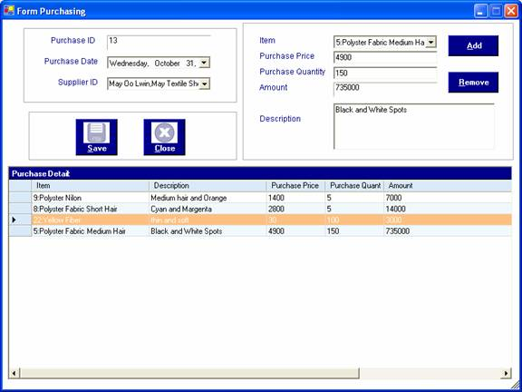

How to process Purchase
After you have successfully logged in to the system, you can enter the required data.
After you enter the necessary information of suppliers and items, you can successfully make a purchase for your factory.
To make a purchase, open the "Purchaser" form from the Process Menu Bar.When it is come out, the purchase ID is automatically filled.
Purchase date and supplier information, item ID, quantity and purchased price need to be filled. When the quantity and purchased price are filled, the total amount will be automatically calculated. It is possible to make many purchases by adding the item ID and quantities and prices by pressing "Add" button.After the adding a design, the ordered design will be appeared in the grid. If more designs would like to be ordered, "Add" or "Alt +A" button can be pressed.
If you change your mind to purchase the items, you can freely remove the items before the purchase information is saved. To remove the required line on the grid, double click on the line of grid that wants to be removed. When the line is become highlighted, click "Remove" or "Alt+R" to remove one line.

When the "Remove" button is clicked, the following message will be appeared to confirm your removing.
If "Yes" button is clicked, the highlighted line will be removed and if "No" button is clicked, there is no removing occurred. To remove the line, "Yes" button need to be clicked.
After making the purchases, "Save" or "Alt+S" button need to clicked to save the data. When the "Save" button is pressed, the following message will be appeared.

When the saving process is complete, Press "Close" or "Alt+C" to close the order form.